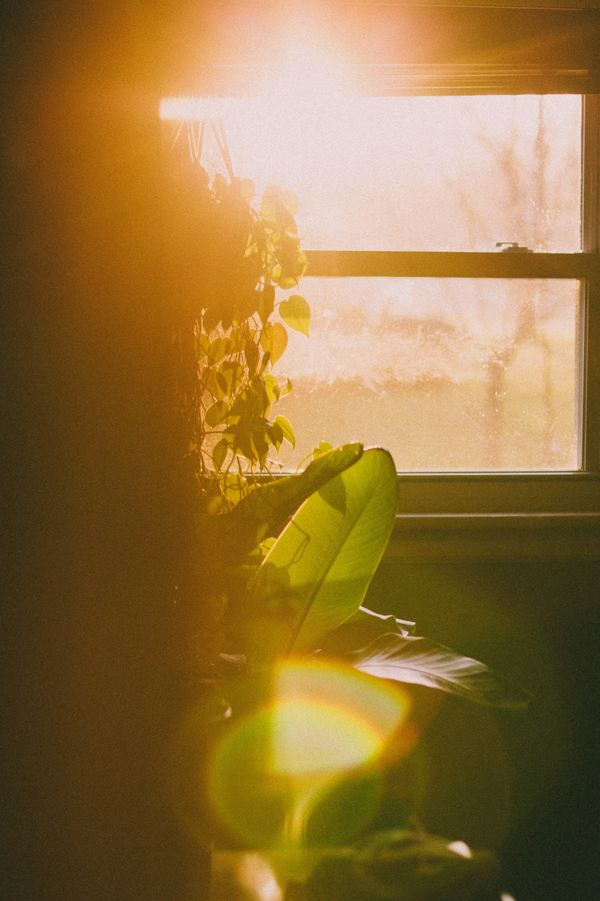
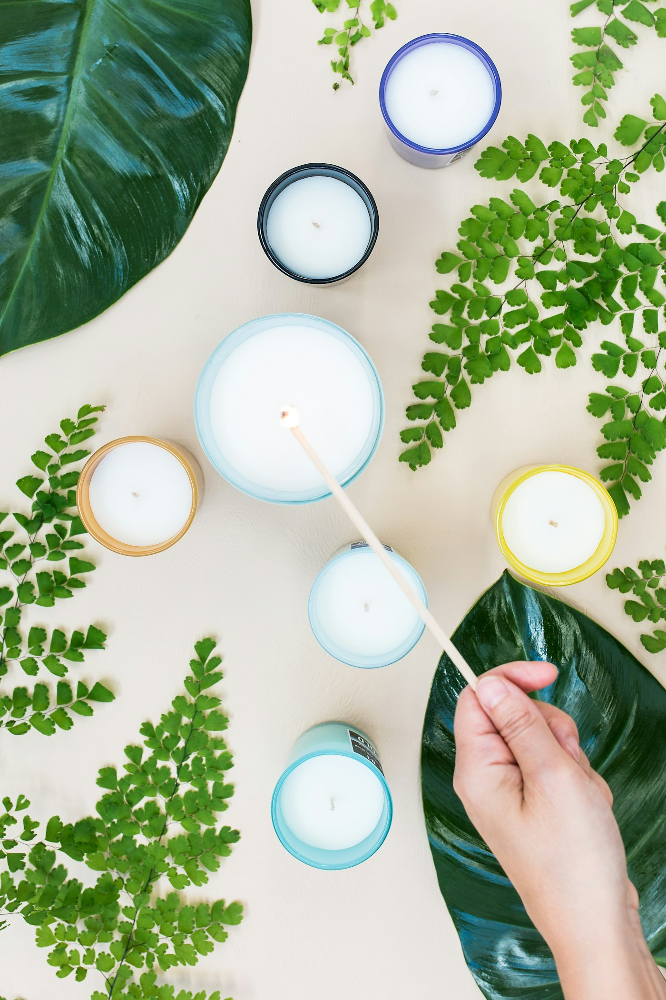

The crest

A woman in a room in Queens said she would be on the medication forever. Daisy Pearl asked what the leaflet said. The leaflet said: continue to exercise, continue to eat well. Nobody had read it to her.
It is usually translated as intention, which is close and not quite right. It is nearer to direction — where the heart is pointed before the hands begin.
In Jewish practice, kavanah is what separates an action performed from an action meant. The same words, said twice, are not the same thing. One is a recitation. The other is a prayer.
We took the name because that distinction turns out to describe almost everything we teach. The difference between eating and nourishing yourself. Between sitting down and sitting. Between stopping and recovering. The action can look identical from the outside. The direction of the heart is what changes it.
“Kavanah means bring light. Light means bring awareness. Awareness means bring education. That is what we are — a company that educates people.” Daisy Pearl, Founder
People find this confusing until they see it drawn. So here it is drawn.
Kavanah Global (.com) is a commercial company. It sells candles, home objects, yoga equipment, apparel and books. It pays tax, it pays staff, and it makes a profit.
Kavanah Global (.org) is a non-profit. It runs shelter houses, wellness programmes, a community and — from 2027 — a residential Sanctuary. It is funded by the profit from the first company, by programme fees, and by donations.
The point of the arrangement is that the second one does not have to spend its life fundraising. It can spend its life doing the work.

Candles, incense and the gift sets are made in our own workshop above the Astoria house. Everything else comes from small makers we have visited in person.
We are not going to pretend every item is hand-made by us — the leggings are not, the water bottles are not. What we will do is tell you which is which, and publish the supplier list.
Orders, wholesale, press, or something that does not fit a category. Someone reads every message.